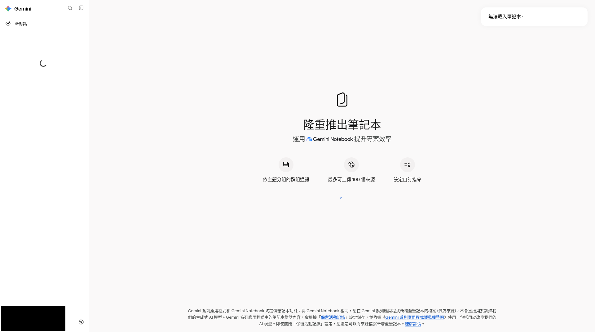

第六章 · Gemini Notebook
來源接地的筆記本（前稱 NotebookLM）
Mixed地區可能 unsupported
正式名 Gemini Notebook（2026-07 起由 NotebookLM 改名）。入口常見 notebook.google。若你的帳號／地區顯示 unsupported，本課改以「網頁聊天上傳同一批 materials」代替，勿硬做。
CASE把導賞稿＋學習重點放進筆記本，練習「只根據來源回答」與點引用核對——精神对齐參考站，但不抄其 57 頁全文。
在 Gemini 生態中的位置


若你的地區／帳號出現類似「無法載入筆記本」，改用網頁聊天上傳同一批 materials，仍練習「只根據來源＋抓錯」。
新建筆記本，只加 materials 來源
提問並點引用回原文
有引用 ≠ 一定對練習 ai-error-example.md 的抓錯方法。
（可選）Audio／Quiz 等工作室
Free／Paid 額度不同；以當日介面為準。詳細逐步可參考社群教程思路，本站維持網頁 Gemini 主線。
Workspace 側欄（僅介紹）
Gmail／Docs 側欄適合「眼前這份」改寫；完整 DR／Canvas 仍回網頁。本課不要求跟做。
待補 · Workspace 側欄
應出現：f15-workspace-sidepanel.png（介紹用）
見 SHOTS_NEEDED.md
見 SHOTS_NEEDED.md

C6Q1
NotebookLM 現況正確描述是？